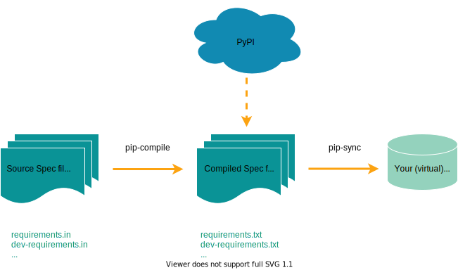
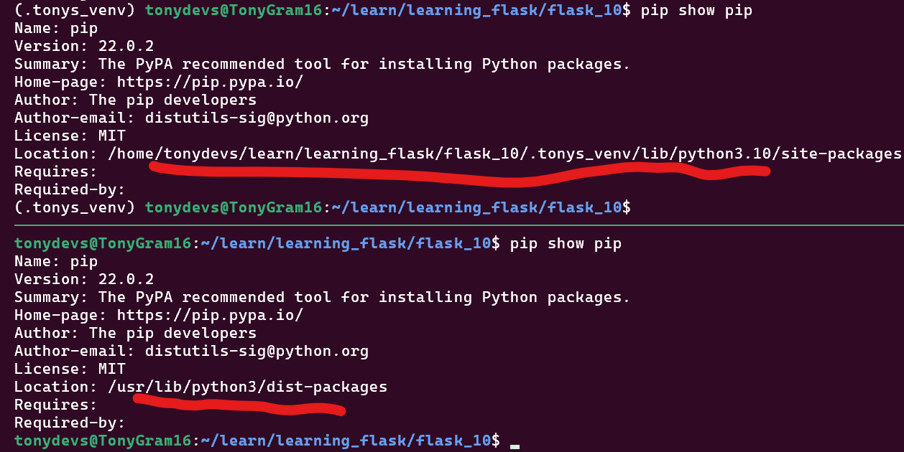
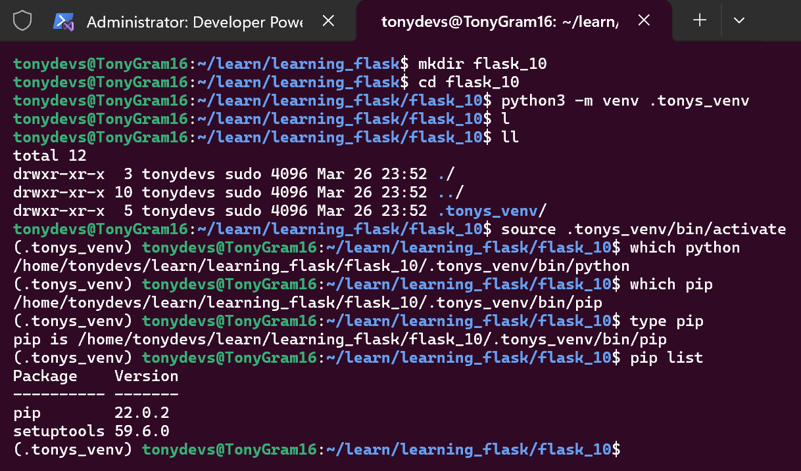
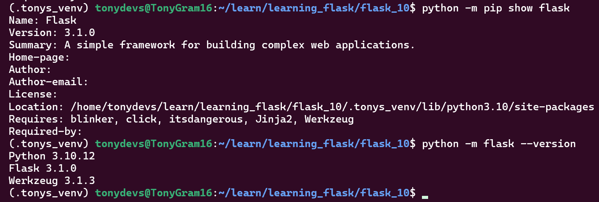
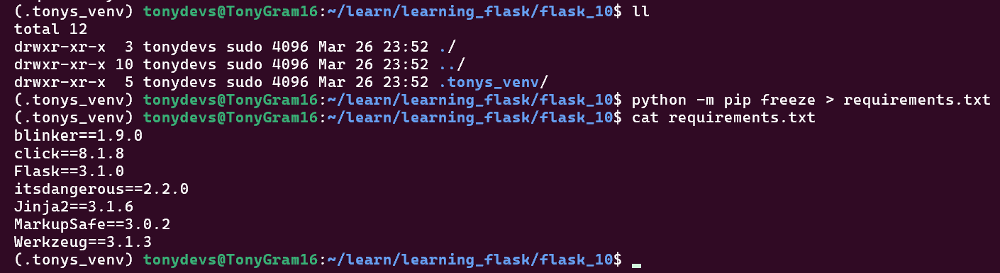

1. Python’s Built-In Module: venv
1.1 Installation
sudo apt update && sudo apt install python-venv
1.2 Check installed (Debian/Ubuntu)
dpkg -l | grep python3-venv
1.3 Create virtual environment (e.g. .my_venv)
python3 -m venv .my_venv
2. Activation
2.1 Pre-Activate
Note: if the virtual environment .tonys_venv IS NOT ACTIVATED:
pip show pipandwhich python3are the are system-wide version.
Useful commands to confirm activated:
which pythonwhich piptype pippip list

2.2 Post-Activate
- Linux:
source .venv/bin/activate - Windows:
.\.venv\Scripts\activate
Note: AFTER ACTIONAL:
pipandpython3are those inside.tonys_venvvirtual environment.
Useful commands to confirm activated:
which pythonwhich piptype pippip list

3. The Best & Proper Way: pip-tools Work-Flow
3.1 Create .venv and activate it
python -m venv .venvsource .venv/bin/activate
3.2 Install pip-tools into virtual environment
pip install pip-tools
3.3 Define deps: Isolate Intentional Dependencies
echo "flask>=3.0.0" > requirements.inecho "pandas>=2.0.0" >> requirements.in- [Optional]:
echo "pytest>=7.0.0" > dev-requirements.in
3.4 Compile dependencies to requirements.txt
pip-compile requirements.in- [Optional]:
pip-compile dev-requirements.in
3.4.1 Security: Verified Installs
- Add
--generate-hashestopip-compilefor Verified Installs.
3.5 Install from requirements.txt
sync all dependencies (or files). This will removes unused packages, compared typical pip install -r requirements:
pip-sync requirements.txtorpip-sync requirements.txt dev-requirements.txt
3.6 Verify
Showing production and (optional) development packages - pip list
3.7 [tba] Automate with a script
Add to Makefile or justfile - sync: - pip-sync requirements.txt dev-requirements.txt
4. BAD WAY: pip install & pip freeze
- Do this at your own peril 😈.
- Only during adhoc quick-testing.
- With a plan to switch over to
pip-tools!
4.1 Why It’s Bad
No Separation of Direct vs. Transitive Dependencies:
pip freezedumps everything (e.g., werkzeug, click) without clarifying which packages you intentionally installed, therefore:- Hard to audit or prune unused dependencies later.
Over-Pinning (Exact Versions for Everything):
pip freezeuses==for all packages, even if you only need>=for flexibility.flask==3.0.0# You might want “flask>=3.0.0” instead!werkzeug==3.0.1# Do you care about Werkzeug’s exact version?
Accidental Inclusion of Dev Tools:
- If
pip install pytestfor testing:pip freezewill include it inrequirements.txt(even if it shouldn’t be in production).
No Hash Checking (Security Risk):
pip freezedoesn’t include package hashes, leaving you vulnerable to supply-chain attacks.
4.2 Show Location and Versions
python -m pip show flask
python -m flask --version

4.3 Freeze/Lock Versions to requirements.txt
pip freeze > requirements.txt

4.4 Install Exact Versions with pip freeze > requirements.txt (After Activation)
Activate Virtual Environment:
source temp_venv/bin/activateor.\temp_venv\Scripts\activate
4.4.1 Method 1: Same Machine
By referencing site_packages original project’s .venv:
pip freeze > og_venv_requirements.txt
pip install --no-index --find-links=./path_to_og_venv/.../site_packages -r og_venv_requirements.txt
4.4.2 Method 2: Different Machine
Downloaded required files (.whl) to a folder (CUSTOM_REQS_FLDR), copy to new machine and install:
pip freeze > requirements.txt
pip download -r requirements.txt -d CUSTOM_REQS_FLDR
- Copy
CUSTOM_REQS_FLDRfolder to the new machine
pip install --no-index --find-links=./CUSTOM_REQS_FLDR -r requirements.txt